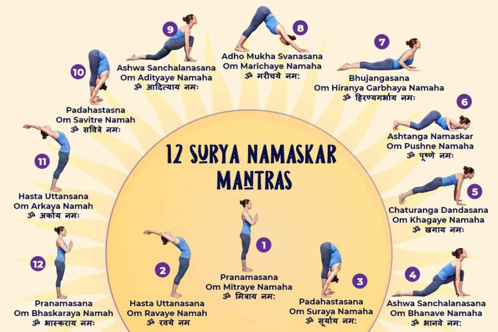

Surya
Namaskar
The best time to do Surya Namaskar is the early morning Muhurt. You should remember that you do not have to eat anything before doing Sun Salutation. Since it is a combination of 12 unique Yoga Poses which needs to be performed in a systematic way. There are various ways of doing Surya Namaskar. But here we are presenting you with the most accurate and authentic methods mentioned by Patanjali.

Hastapadasana
The uniqueness of this asana is to respect and value one’s inner being, yield to its intuitiveness. This asana is replete with humility and acceptance of the self along with surrender to the universe. It represents a cycle of energy generated within the body and offered to the cosmos.

Ashwa
Sanchalanasana
While performing this asana, chanting of mantra enhances the benefits. So, one can chant ”Om Bhanave Namah” and ”Om Adityaya Namah” mantras of the 4th and 9th sequence of Sun salutation.